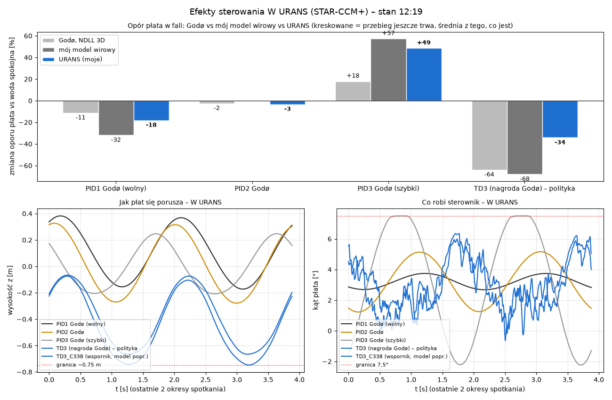
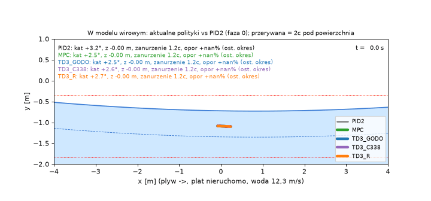
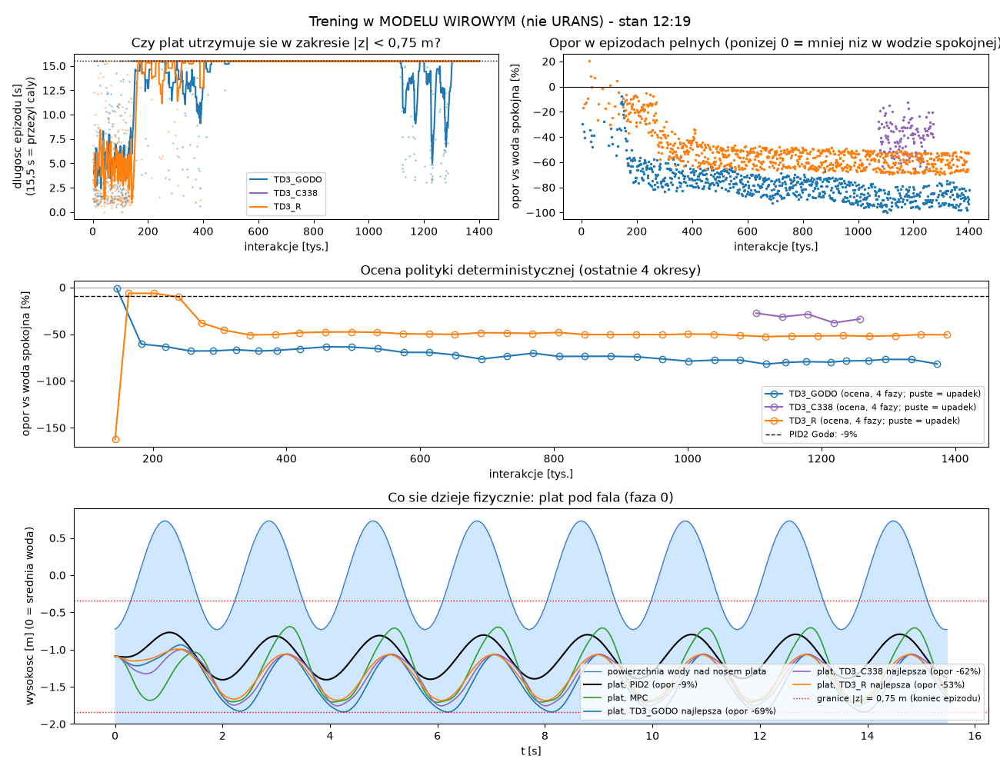

Fala regularna H 1,5 m, T 5 s, 24 kn. Odświeżanie co ok. 5 min. Wyniki W URANS i W MODELU WIROWYM są osobno – model nie jest dowodem.
Opór płata = średnia z ostatnich 3 okresów spotkania (5,8 s), woda spokojna 61,1 W/pasek = 0 %. Godø: NDLL 3D, jego tab. 4–5. „Model” = mój model wirowy (bazowy).
| wczytywanie… |

| sterownik | czego potrzebuje | opór płata | z wspornikami | z̈ RMS [m/s²] | haczyk |
|---|---|---|---|---|---|
| PID1 Godø (wolny) | tylko wysokość | −32 % | – | – | w URANS −18 % |
| SAC | sieć, 0,6 mln kroków | −61 % | −38 % | 2,6 | wersja odporna stale padała |
| TD3 (nagroda Godø) | sieć, 1,4 mln kroków | −68 % | −44 % | 3,0 | lata przy granicy −0,75 m; dziś w nocy w URANS |
| MPC liniowy, W_Z 2 | model + fala 1,9 s naprzód | −69 % | −49 % | 4,5 | dawne −111 % było starym modelem oporu (CD stałe); W_Z 20: −49 % / −34 %; wspornik w koszcie MPC nic nie daje (−48,5 %); fala nieregularna, czujnik 3 m: −18,5 % |
Ta sama fala, faza 0. Agenty: najlepsza polityka z dotychczasowych ocen (TD3_GODO – nagroda Godø; TD3_C338 – wspornik z CFD, uczony na modelu poprawionym; TD3_R – odporny, uczy się).
| wczytywanie… |
JONSWAP Hs 1,5 m, Tp 5 s, fala krótkogrzbietowa (cos²), szum czujników 2 cm RMS, 5 % zaników. 30 s na realizację; opór = średnia z ostatnich 20 s, tylko gdy płat przeżył.
| wczytywanie… |
Czujnik 3 m prognozuje, czujnik 1,5 m sprawdza i koryguje (wybór prądu z banku −1…+1 m/s); „+zapas” = margines zanurzenia 3× bieżący błąd prognozy.
| jeszcze nie liczone (start po przeglądzie czujników) |

